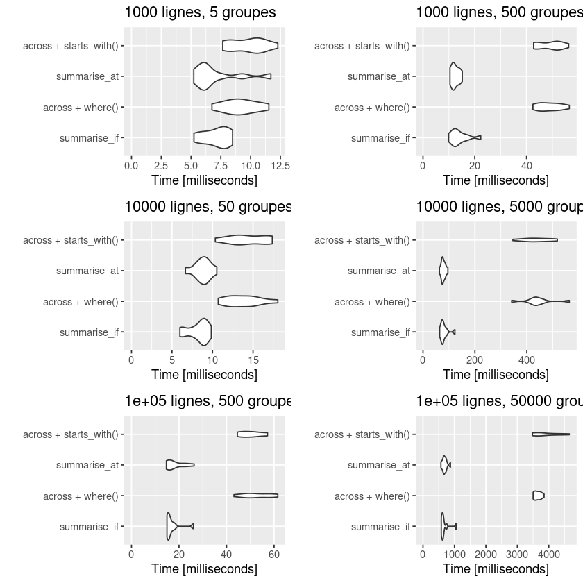

Vous avez dû voir passer cette information : une mise à jour majeure de dplyr (version 1.0.0) est sortie il y a quelques mois! L'occasion de faire une nouvelle petite note sur un élément très important de cette nouvelle version : across(), un nouveau verbe pour réaliser des opérations sur plusieurs colonnes. On va le présenter rapidement et regarder ensuite ses performances en termes de vitesse d'exécution par rapport aux anciennes méthodes. On utilise la version 1.0.2 de dplyr, celle sur le CRAN à ce jour, et qui a justement été optimisée par rapport à la version 1.0.0. Cette note est organisée en deux parties :
- [across(), ça marche comment?][across(), ça marche comment?], où l'on présente les bases de across().
- [across(), ça tourne comment?][across(), ça tourne comment?], où l'on évalue la vitesse d'exécution par rapport aux anciennes méthodes.
Si vous voulez balayer plus largement les différents éléments de la mise à jour de dplyr, vous pouvez vous rendre sur le site du tidyverse (en anglais) ou sur cet article du blog de ThinkR (en français) qui en présentent les changements majeurs.
across(), ça marche comment?
Syntaxe de base
Le verbe across() vise à remplacer toutes les fonctions suffixées par _if, _at et _all. Il regroupe ces méthodes dans une seule et permet ainsi de les associer, ce qui n'était pas possible avant. Il s'utilise dans mutate et summarise. La syntaxe associée à ce verbe est la suivante :
across(.cols, .fns)
Dans laquelle :
- Les colonnes .cols peuvent être sélectionnées en utilisant la même syntaxe que pour la méthode vars() (nom des variables, starts_with, end_with, contains,...), mais aussi avec des conditions rentrées dans where() qui sélectionneront de la même manière que le faisaient les fonctions suffixées par _if.
- La fonction .fns est définie comme auparavant (le nom de la fonction ou sa définition "à la volée" avec ~ my_fun(.)).
Quelques exemples
Pour changer, on utilise pour ces petits exemples la table penguins promue par Allison Horst pour remplacer l'usage de la table iris. Vous pouvez l'obtenir depuis le package palmerpenguins sur le CRAN. À partir de cette table, l'instruction visant à sortir la moyenne de toutes les variables numériques s'écrivait auparavant :
penguins %>% summarise_if(is.numeric, mean, na.rm = TRUE)
| bill_length_mm | bill_depth_mm | flipper_length_mm | body_mass_g | year |
|---|---|---|---|---|
| <dbl> | <dbl> | <dbl> | <dbl> | <dbl> |
| 43.92193 | 17.15117 | 200.9152 | 4201.754 | 2008.029 |
Elle se réécrit avec across() en utilisant where() :
penguins %>% summarise(across(where(is.numeric), mean, na.rm = TRUE))
| bill_length_mm | bill_depth_mm | flipper_length_mm | body_mass_g | year |
|---|---|---|---|---|
| <dbl> | <dbl> | <dbl> | <dbl> | <dbl> |
| 43.92193 | 17.15117 | 200.9152 | 4201.754 | 2008.029 |
Si l'on souhaite sélectionner à partir du nom des variables, la nouvelle syntaxe est la suivante :
# Ancienne version
penguins %>% summarise_at(vars(matches("bill*|flipper*")), mean, na.rm = TRUE)
# Avec across()
penguins %>% summarise(across(matches("bill*|flipper*"), mean, na.rm = TRUE))
| bill_length_mm | bill_depth_mm | flipper_length_mm |
|---|---|---|
| <dbl> | <dbl> | <dbl> |
| 43.92193 | 17.15117 | 200.9152 |
| bill_length_mm | bill_depth_mm | flipper_length_mm |
|---|---|---|
| <dbl> | <dbl> | <dbl> |
| 43.92193 | 17.15117 | 200.9152 |
On note également qu'on peut combiner dorénavant les sélections sur les types des colonnes et sur leur nom dans une seule instruction across(), ce qui n'était pas possible avant. Pour enlever les années des moyennes numériques, on peut par exemple écrire :
penguins %>% summarise(across(where(is.numeric) & -contains("year"), mean, na.rm = TRUE))
| bill_length_mm | bill_depth_mm | flipper_length_mm | body_mass_g |
|---|---|---|---|
| <dbl> | <dbl> | <dbl> | <dbl> |
| 43.92193 | 17.15117 | 200.9152 | 4201.754 |
Enfin, le paramètre .names de across() est également très pratique et permet notamment dans une instruction mutate() de créer de nouvelles colonnes nommées à partir des anciennes auxquelles on peut se référer avec .col. Par exemple, si je veux créer deux nouvelles colonnes passant les informations sur le bec en pouces mais en conservant les anciennes colonnes, je peux écrire :
penguins %>%
mutate(across(starts_with("bill"), ~ . * 0.04, .names = "pouces_{.col}")) %>%
select(contains("bill")) %>% head(5)
| bill_length_mm | bill_depth_mm | pouces_bill_length_mm | pouces_bill_depth_mm |
|---|---|---|---|
| <dbl> | <dbl> | <dbl> | <dbl> |
| 39.1 | 18.7 | 1.564 | 0.748 |
| 39.5 | 17.4 | 1.580 | 0.696 |
| 40.3 | 18.0 | 1.612 | 0.720 |
| NA | NA | NA | NA |
| 36.7 | 19.3 | 1.468 | 0.772 |
across(), ça tourne comment?
À la sortie de la mise à jour de dplyr, il avait été signalé que la méthode across() impliquerait peut-être de légères pertes en termes de vitesse d'exécution par rapport aux anciennes méthodes _at, _if et _all. Une partie de ce retard a été apparemment rattrapé dans les dernières mises à jour et donc dans la version 1.0.2 que l'on utilise dans cet article. Sur le modèle de ce que l'on a proposé dans un article précédent, on va comparer les instructions _if et _at d'un summarise groupé avec leurs équivalents dans across() pour différentes tailles d'échantillons et de groupes.
Le tibble utilisé a le format suivant, ici pour 100 lignes et deux groupes :
nbrow <- 100
nbgpe <- 2
as_tibble(data.frame(x1 = rnorm(nbrow), x2 = rnorm(nbrow),
x3 = runif(nbrow), x4 = runif(nbrow),
y = as.factor(sample(floor(nbgpe), replace = TRUE))
)) %>%
arrange(x1) %>% head(5)
| x1 | x2 | x3 | x4 | y |
|---|---|---|---|---|
| <dbl> | <dbl> | <dbl> | <dbl> | <fct> |
| -2.738078 | 1.12303171 | 0.84041535 | 0.66216821 | 2 |
| -2.418178 | -0.18281610 | 0.01449968 | 0.22480163 | 2 |
| -2.038240 | -0.48819836 | 0.47085237 | 0.42920691 | 2 |
| -1.961096 | 0.49787841 | 0.48345918 | 0.61128447 | 2 |
| -1.853462 | -0.03496033 | 0.22337675 | 0.05563201 | 2 |
Les différentes instructions testées sont les suivantes :
# summarise_if
data %>% group_by(y) %>% summarise_if(is.numeric, mean)
# across + where()
data %>% group_by(y) %>% summarise(across(where(is.numeric), mean))
# summarise_at
data %>% group_by(y) %>% summarise_at(vars(starts_with("x")), mean)
# across + starts_with()
data %>% group_by(y) %>% summarise(across(starts_with("x"), mean))
Les résultats du microbenchmark() pour les différentes combinaisons de nombres de groupes et de lignes sont présentés dans un graphique qui représente la distribution du temps d’exécution des 10 occurences testées pour chaque méthode :
library(microbenchmark)
library(ggplot2)
test_group_by <- function(nbrow, nbgpe){
test <- as_tibble(data.frame(x1 = rnorm(nbrow), x2 = rnorm(nbrow),
x3 = runif(nbrow), x4 = runif(nbrow),
y = as.factor(sample(floor(nbgpe),
replace = TRUE))
))
return(autoplot(
microbenchmark::microbenchmark(times = 10, unit="ms",
summarise_if = test %>% group_by(y) %>% summarise_if(is.numeric, mean),
"across + where()" = test %>% group_by(y) %>% summarise(across(where(is.numeric), mean)),
summarise_at = test %>% group_by(y) %>% summarise_at(vars(starts_with("x")), mean),
"across + starts_with()" = test %>% group_by(y) %>% summarise(across(starts_with("x"), mean))
),
log = FALSE)
+ ggtitle(paste0(nbrow, " lignes, ", nbgpe, " groupes")) + expand_limits(y = 0))}
x <- 100
y <- 0.5
for (i in seq(1, 3)){
x <- x * 10
y <- y * 10
assign(paste0("plot", i, sep = ""), test_group_by(x, y))
}
x <- 100
y <- 50
for (i in seq(4, 6)){
x <- x * 10
y <- y * 10
assign(paste0("plot", i, sep = ""), test_group_by(x, y))
}
library(gridExtra)
grid.arrange(plot1, plot4, plot2, plot5, plot3, plot6, ncol = 2, heights = c(14, 14, 14))

On constate en effet une moins bonne performance en termes de vitesse d'exécution des instructions utilisant le verbe across(). Les différences sont surtout marquées dans le cas où il y a beaucoup de groupes par rapport au nombre de lignes (colonne de droite) et ce quelque soit le nombre de lignes. Elles sont moins importantes dans le cas où il y a peu de groupes par rapport au nombre de lignes (colonne de gauche).